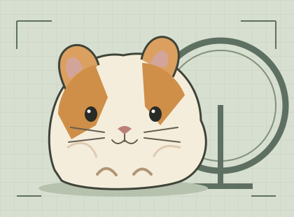

The published paper trail
0x74665dAecA35A2303e767E76a2FF1FB6F93e119f- Last settlement located
- 26 Oct 2026 · 16:20:36 UTC
- Settled through round
- 1,973
- Ethereum block
- 11,999,145
A public-evidence investigation into SqueekChain’s hamster-powered proof of work.

Male. Syrian hamster. White-orange. The project’s biography is unusually forthcoming.
Read the biographyA magnet, a Hall sensor and a Pi turn accepted passages into ten-minute work records. Cameras watch independently.
The Pi does the paperwork. Inspect the WHEELY9000Best day: 29 Oct · 11.675 km.
Busiest half hour: 27 Oct, 22:00–22:30 UTC · 1,827 work units.
7-day snapshot · 31 Oct, 00:52 UTC. 68.22% coverage. Days start at noon UTC; stripes mark partial days. Gaps are unknown.
Open saved API evidenceThe Reporter key authorizes each settlement. The relayer submits it and pays gas. A signature proves authorization, not fur.
Both named cores report the same Reporter in the saved chain read. The device’s signing chip is a separate layer.
Inspect the deployment recordSepolia has no premine. “Hamster-Owned Liquidity Safe” is the project’s name for its reserve recipient, not proof of hamster control.
Read the token documentationThe care policy puts welfare first: voluntary running, undisturbed rest, no waking for mining, no restricted food or water. Stop filming or mining if care requires it.
Read the care policy ↗A published policy; compliance was not independently inspected.The saved statistics show 118 active rounds, 524 zero-work rounds and 299 missing rounds. Zero work is consistent with rest, but downtime can also produce zeros.
Read what the system proves ↗One round is ten minutes. Missing data stays unknown.On 30 October, the reported trail went cold at the published core. Its last located settlement was on 26 October. The API was following a different core.
0x74665dAecA35A2303e767E76a2FF1FB6F93e119f0x980B4424c007CAf7a1f3670B48c8EaEf7EbC3d44Our inference: a break in the public paper trail, not proof that the wheel stopped. These cores have different streams and genesis times. Their totals are separate histories.
Chain snapshot: block 12,030,379, 31 Oct 2026, 00:53:48 UTC. The original 30 October check comes from the brief; the saved 31 October read supports its cutoff. The reason for the mismatch remains unresolved. Open the saved chain reads ↗
Ethereum Sepolia · chain ID 11155111. Published roles from the deployment record; observations from the saved chain read. Addresses identify system roles only.
0x74665dAecA35A2303e767E76a2FF1FB6F93e119fSettles work. The older core named in the docs.0x980B4424c007CAf7a1f3670B48c8EaEf7EbC3d44The saved API anchor receipt targets this core.0x3beE588fC20dE788Bac17d33b41Da7346cb27EC4Reward distributor. Saved read: 5,600 SQK per block; points to the older core.0x6872bfa5ccc3e9e440c6c16e5ffdabb8dba4cc76SQK token. Saved cap read: 2.1 billion SQK.0x0eAF3E0d40A0a8E5a6Ac030b2459E9FB0B7905c6Squeek NFTs. Saved views match published Mining, older Core and economic recipient.0xB317AB7Cc24fD5d94EA120B3b189bc6527a7d0AaPublic signing address. EIP-712 authorization for every settlement; historical signatures were not exhaustively recovered.0xd3c8e8df661f055becb6a20dad479f4dcc6f7cd7Submits signed batches and pays gas. Matches the saved anchor receipt sender.0x828cb04dbf0bdd8eb35d19045638a1af6e3d17e8Protocol reserve, sale closeout and royalty recipient. No balance or beneficial-ownership claim.Read the deployment record ↗ · Read the chain snapshot ↗
Selected reads establish neither implementation integrity nor Safe control. The older deployment’s reward rules are not assumed to govern the API core’s wider deployment.
Five parody theories. No source alleges an impersonator. The following deductions are ours.
The biography says Syrian hamster. The sensor cannot identify species, so the chain alone cannot rule a cat in or out.
No feline evidence.
Check the biography ↗A wheel, magnet and sensor record passages. The installation holds neither the Reporter key nor the relayer key.
Apparatus, not an author.
Check the apparatus ↗The Pi counts and stores work. Its signing chip signs host-supplied bytes; it cannot verify their physical truth.
A clerk with a trust boundary.
Check the proof limits ↗It approves exact settlement batches. It does not measure the wheel or identify its runner. The relayer sends the transaction.
A witness to authorization.
Check the signing role ↗The records describe a young male Syrian hamster. Nothing examined identifies a substitute animal or verifies a performer’s identity.
Casting rumor unverified.
Check the subject’s record ↗Filed 31 October 2026 UTC. The board summarizes the original research below. Live alibi readings are separate from this frozen evidence.
Species, sex, colour and voluntary activity are project assertions. Welfare compliance was not independently inspected.
Wheel, magnet, Hall sensor, Pico, Pi and signing-chip responsibilities; independent video. No physical inspection.
Hamster-powered toychain on Ethereum, trust boundaries and economics. Its halving schedule conflicts with the issuance docs.
Project summary, 6,900 / 5,600 SQK rates, Sepolia testnet and links to the documentation.
Polled every 10 seconds while this page is visible and updates are enabled. Original capture: 31 Oct, 00:53:04 UTC ↗. Speed and freshness are readings, not authentication of the animal.
Board’s saved response: 31 Oct, 00:52:53 UTC ↗. 55,392 work units; 48,634,176 mm. 642 of 941 rounds observed. Best day: 13,297 units. Busiest half hour: 1,827 units. Unavailable block/oracle statistics are not zeros.
Contract addresses, Reporter, relayer and economic recipient. Open saved deployment ↗. This record names the older core.
State/configuration reads, code presence, selected token/NFT views, settlement logs and the API anchor receipt at block 12,030,379 ↗. Historical nonce search located the last settlement increases; this is not an exhaustive event, upgrade, Safe-control or signature audit.
2.1 billion cap, 10% launch premine, 6,900 SQK, no halvings. Sepolia exception: 5,600 SQK, no premine. Testnet SQK has no monetary value according to the docs.
Noon-to-noon days, freshness, units, measurement and authorization limits. A signature does not establish physical truth.
The project’s public console. Its page was retrieved; livestream authenticity and animal care were not verified. No video or third-party tracking is embedded here.
The original detailed report, capture manifest and saved evidence remain available offline. External links open a new tab and need a connection.
The answer was in the hamster documentation.
The project identifies a male Syrian hamster. The API records wheel activity; Ethereum records authorized settlements. The species conclusion follows the biography, not a cryptographic proof of hamsterhood.
Still open: the two core histories, the reward-policy conflict and independent verification of physical measurements. None requires investigating people.
Check the remarkably explicit evidence ↗